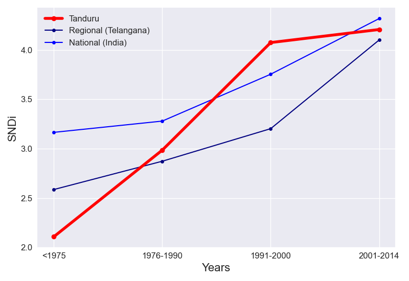

The cumulative and incremental level of street network disconnectivity in Tanduru change over time in the same way.
Taking into account all roads in Tanduru, the overall level of street network sprawl is 3.67. New street construction in Tanduru has been increasing in sprawl over time. This increase has slowed: between <1975 and 1976-1990, SNDi rose by 0.88 points, but between 1991-2000 and 2001-2014, it rose by just 0.13.
The total level of sprawl in Tanduru is higher than the regional level. Tanduru follows the same trend as Telangana; additions to the street network in each period vary in sprawl levels the same way.
Compared to India, the level of sprawl in Tanduru is lower overall. The levels of SNDi in Tanduru and India follow the same trend.
To date, Tanduru is the 6th-most disconnected city out of the 56 cities in Telangana. It has maintained its place in the ranks since 1975. In <1975, it ranked 14th, ranked 9th in 1976-1990 and ranked 6th in 1991-2000 and ranked 10th in 2001-2014.